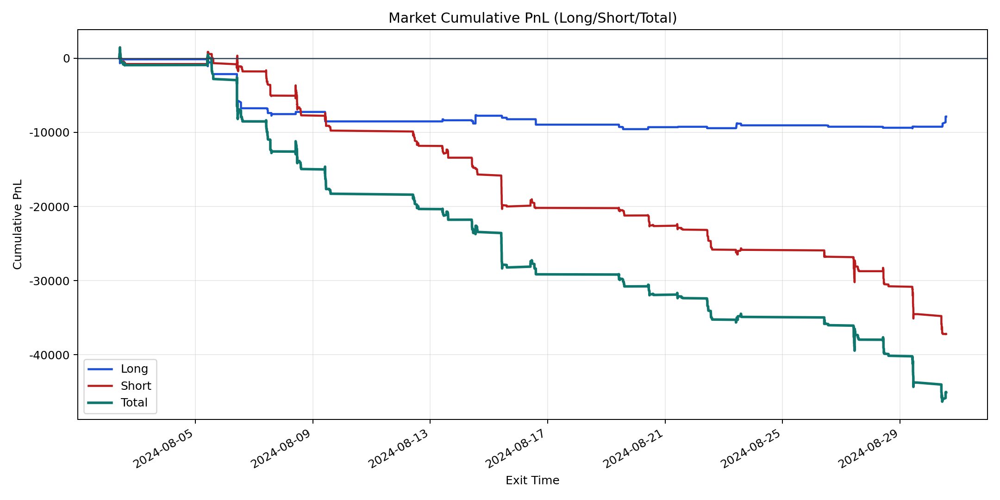
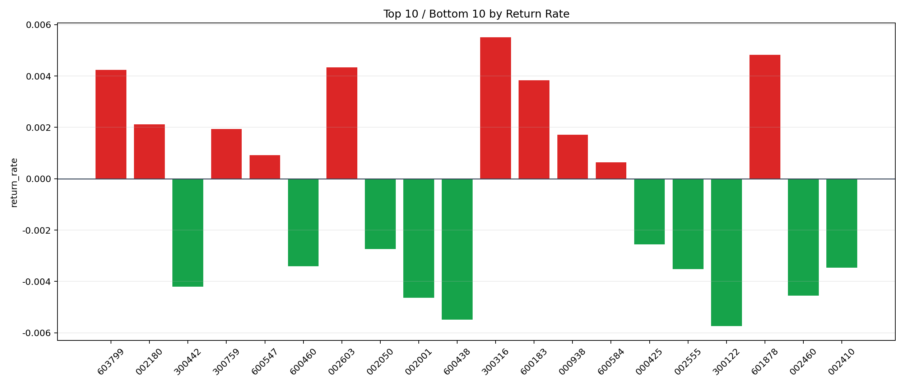

| repo_root | /home/haoranyou/data/output/dynamic_AUM_TAKER |
|---|---|
| period_months | 1 |
| period_label | 2024-08-02_to_2024-08-30 |
| start_time | 2024-08-02 09:52:42 |
| end_time | 2024-08-30 13:44:37 |
| n_trades | 1848 |
| n_symbols | 47 |
| total_pnl | -45038.97635000033 |
| long_total_pnl | -7864.193599999894 |
| short_total_pnl | -37174.78275000043 |
| total_entry_notional | 32122859.999999996 |
| long_entry_notional | 4813505.000000001 |
| short_entry_notional | 27309355.0 |
| total_return_rate | -0.0014020848812963831 |
| long_return_rate | -0.0016337769670956802 |
| short_return_rate | -0.001361247189836612 |
| top_symbols_by_return | ["300316", "601878", "002603", "603799", "600183", "002180", "300759", "000938", "600547", "600584"] |
| bottom_symbols_by_return | ["300122", "600438", "002001", "002460", "300442", "002555", "002410", "600460", "002050", "000425"] |

